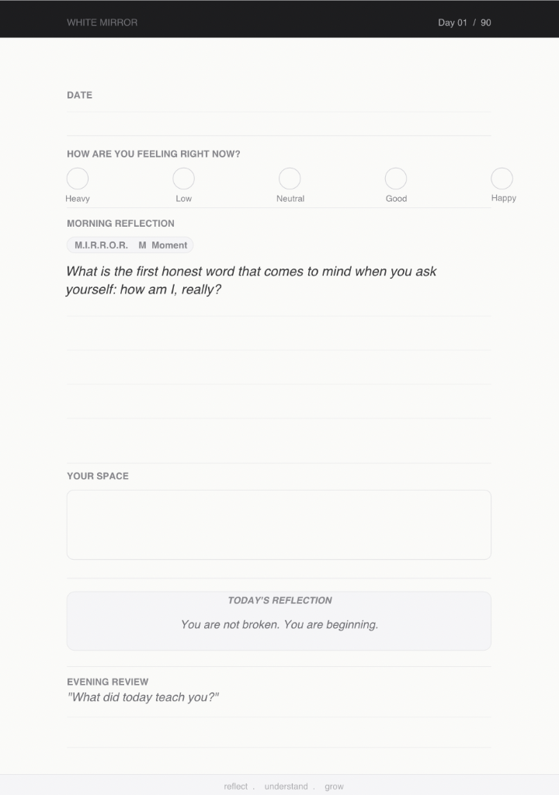
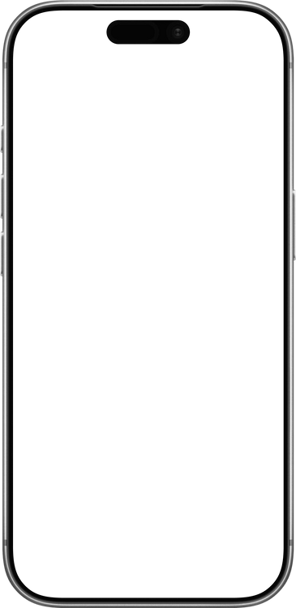
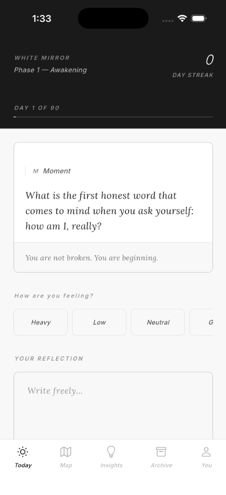

90 days to stop postponing it.
Six steps. One practice. Every prompt in this journal — and every screen in the app — follows this arc.
Ground yourself in the present. Before you reflect, you must arrive. Notice what's happening right now — in your body, your breath, this moment.
Name what you feel without judgment. Clarity begins with honest recognition. What emotion is present? What thought keeps returning?
Go deeper than the surface. Ask why. Trace the feeling to its root. Your journal prompt lives here — in this honest, unguarded space.
Choose a different lens. Not toxic positivity — genuine perspective. What else could be true? What does this teach you?
Step back and witness your pattern. Over 90 days, you'll notice themes. Your mood map and AI insights help you see the shape of your growth.
Carry one intention forward. Not a resolution — a single, grounded step. Rise doesn't mean up. It means forward. Consistently.
White Mirror is a premium, hardcover guided journal currently in production. Inside, you'll find 90 prompts mapped across five phases of growth, all governed by the M.I.R.R.O.R. method.
Each journal contains a unique code linking your physical artifact to your digital companion app—giving you a hybrid space to reflect without judgment.
When you receive your physical journal, the app activates. It acts as an ambient companion—built around your current phase, prompt, and M.I.R.R.O.R. letter.
90 days of mood data visualised. See the emotional arc of your journey laid out as a heat map — patterns you couldn't see day to day.
Weekly reflections generated from your entries. Surface themes, name blind spots, and celebrate growth you might have missed.
Every entry, searchable and chronological. Your 90-day story, always accessible.
A private circle of people on the same journey. No public feed. Anonymous by default. Depth over volume.
Full control over your data. Manage your 90-day progress, update your profile, and secure your reflections.



The 90 days aren't random. They're structured as a deliberate journey — each phase building on the last.
The practice begins here. Before anything can change, you have to see where you actually are — clearly, without softening it. Day one is an arrival, not a transformation.
You start digging. The prompts go deeper — into the stories you inherited, the defenses you built, the versions of yourself you perform without realising it.
The hardest phase. Everything shifts here — not because circumstances change, but because you choose a different lens. Reframe days begin. Old stories get examined.
You stop reacting and start watching. Patterns you couldn't see day to day become visible. Your mood map and AI insights start to show you the shape of your own mind.
The practice becomes the life. You don't journal to feel better anymore — you journal because you know yourself now. Day 90 is not an ending. It's the first day you don't need to be told who you are.
The white mirror doesn't show you who you wish you were.
It shows you who you actually are.
Join the waitlist today and be the first to know when pre-orders open.